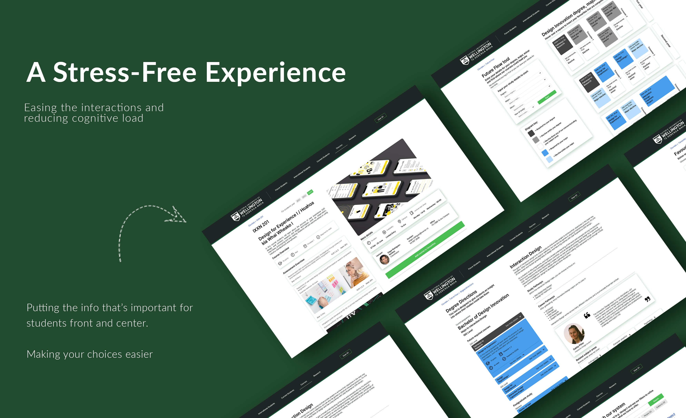
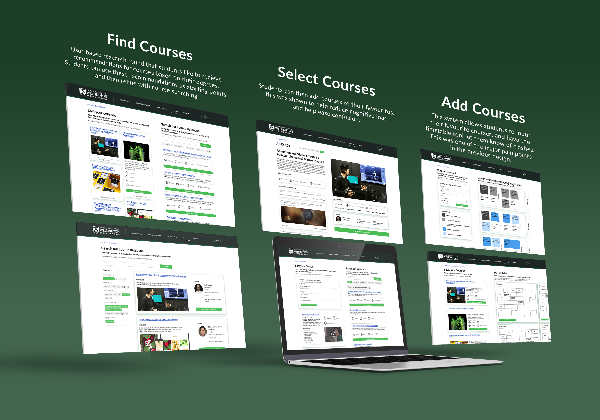
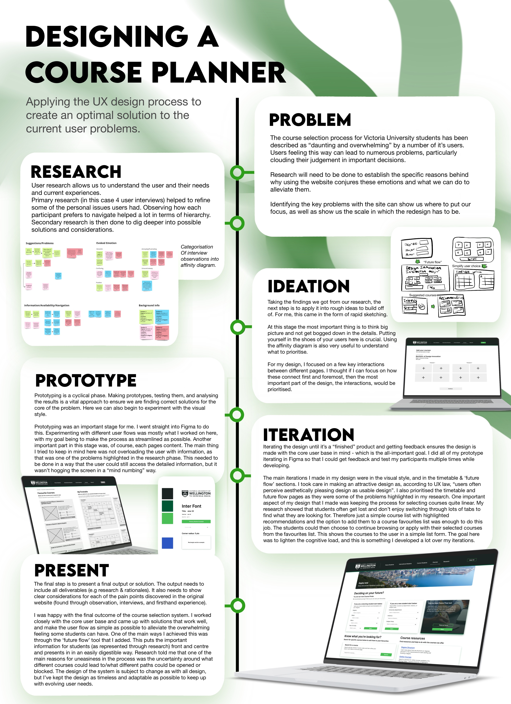

Course Selection Website
I designed a course selection system based on research and participant interviews/testing. Selecting four university students as my participants, I set out to pinpoint exactly what they struggled with in the system, and what I could design remove those struggles.
After asking a series of questions to my four participants, I found that their frustrations mainly came from the same places; finding their major/minor requirements, working out future course plans, and dealing with course clashes. I then asked each participant to go through their process with the existing course selection system. From this, I gathered data on how students prefer to navigate the system, as well as the specific points they had trouble with. Following this, I created a customer journey map that visualised the pain points, allowing me to make clearer insights into the problems each participant ran into.
Next, I brainstormed different design opportunities, mostly revolving around the idea of reducing the cognitive load and amount of choices/information the students need to keep track of themselves.
After an initial userflow diagram and wireframes, I set out to create my design. The pages I selected to redesign were the timetable feature (where students go to input their saved courses and sort out course clashes), the future flow tool (where students can see where their courses lead to), and the individual course pages (with the added emphasis on saving courses to your favourites).
I kept the UI design as simple as possible for this project, as the confusing design elements on the original site made it harder to easily spot what to do on any given page. A lot of emphasis was putting the most important information the students need front and center, making sure to not bog them down with the bonus information on first glance. I also prioritised the information that my participants said they found easier to follow e.g images and brief course descriptions. Having a minimalist colour scheme and style guide helped to keep the pages simple, whilst making the main buttons and flow of the system very clear.
Below is a timeline of this project I created for a more in-depth look at my process:
